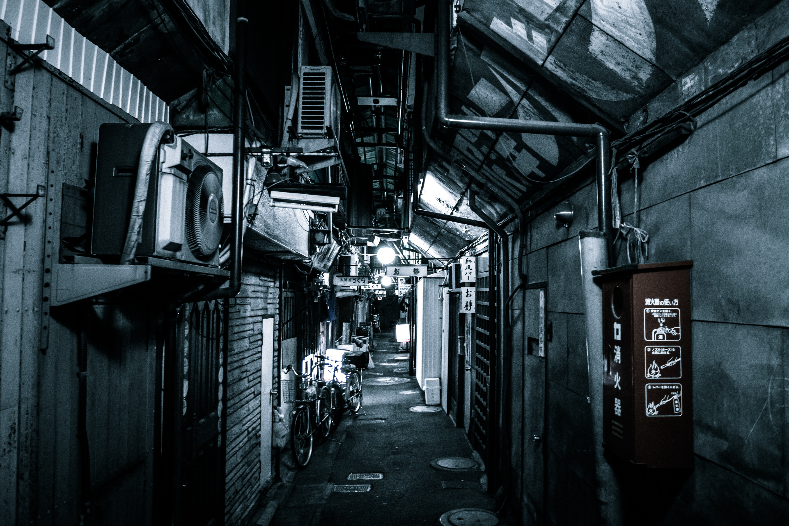
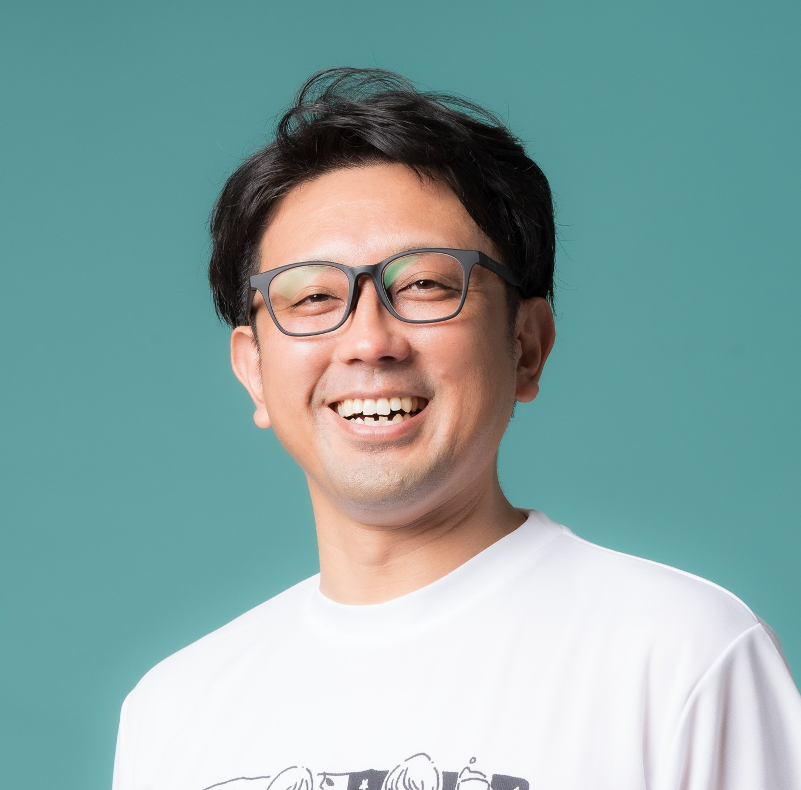

「地方には何もない」「挑戦できる環境がない」？ 退屈な常識は、僕らの手で面白く塗りつぶしてしまえばいい。 私たちがここ、愛媛県西条市で創り出しているのは、単なる「場所」じゃない。 一人ひとりの「偏愛」や「熱中」が交わり、周りをガンガン巻き込みながら巨大なうねりとなっていく「挑戦の渦」だ！ サカエマチHOLICに集まる泥臭くて熱いリアルな繋がりを、テクノロジーの力で一気にスマートにブーストさせる。この戦い方こそが、変化に負けないしなやかな地方を創るカギになるんだ。 「地方だからできない」を、「地方だからこそ、おもしろい！」へ。 西条から日本中へ、最高にエキサイティングなムーブメントを！ さあ、君も僕らの渦に巻き込まれようぜ！💥
西条市、人口10万弱のこのまちで、私たちは圧倒的なチャレンジャーコミュニティを築き上げました。
サカエマチHOLICを中心に、このコミュニティからさまざまなプロジェクトが日々生まれています。一人の「やりたい！」が仲間の力で即プロジェクト化し、圧倒的スピードで実行に移される。このダイナミックな流れを、WORKSでぜひ体感してください。

「おもしろき こともなき世を おもしろく」を地方で体現する起業家兼活動家。
会計事務所を退職後、農業で起業。D2Cや農家レストランなど先進的なビジネスを展開。
2018年、縁もゆかりもなかった愛媛県西条市に飛び込み、リズカーレを創業。コワーキングスペースの運営、起業型地域おこし協力隊の定着支援、四国初のコミュニティ財団設立など、地方で挑戦者の生態系を耕し続けている。
サカエマチHOLICは、チャレンジャーを生み出す「装置」であり「入り口」です。
スタートアップ（急成長）だけを目指すのではなく、個々の「自己実現」や「まちづくり」へのアクションを応援しています。
年代も業種もバラバラな個人事業主や法人経営者、会社員、公務員が集まり、その多様性が「化学反応」と「ワクワク」を生み出します。「最初は安く使える場所を探していたけど、今は様々な刺激が得られて違ったところに価値を感じている」と、場所以上にコミュニティとしての価値が求められています。
約6割の会員が「他者の相談に乗ったり手伝ったりした経験がある」と回答しており、コワーキングが地域の社会関係資本を可視化し、増幅させる装置として機能しています。
起業家ひとりひとりに寄り添うために、以下の考え方を大事にしています。
「人生の手綱を、取り戻せ。」
独自の強みを磨き上げるブランディングと、熱い仲間のコミュニティを同時に提供。確信を持って次の一歩を踏み出せる起業家になろう！
協力隊の定着や起業家輩出に、泥臭く伴走して確実な「成果」を叩き出す！予算を未来への投資に変え、「挑戦者が自走し続ける強い街」の基礎を築き上げよう！
戦略の壁打ちからAIによる業務効率化まで丸投げOK！経営者が本来やるべき「未来を創る仕事」に専念できる環境を即構築！
既存の常識を塗りつぶす、新しいムーブメントを共に。
まずは無料で「壁打ち」してみませんか？👉